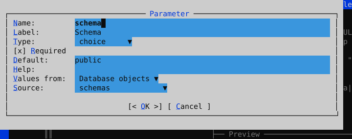
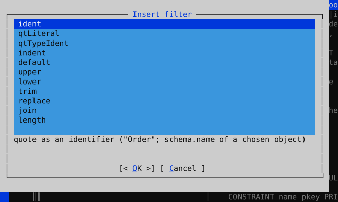
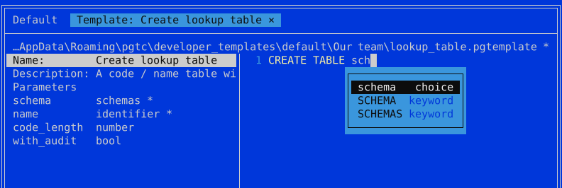
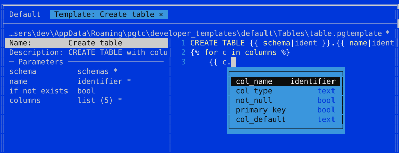
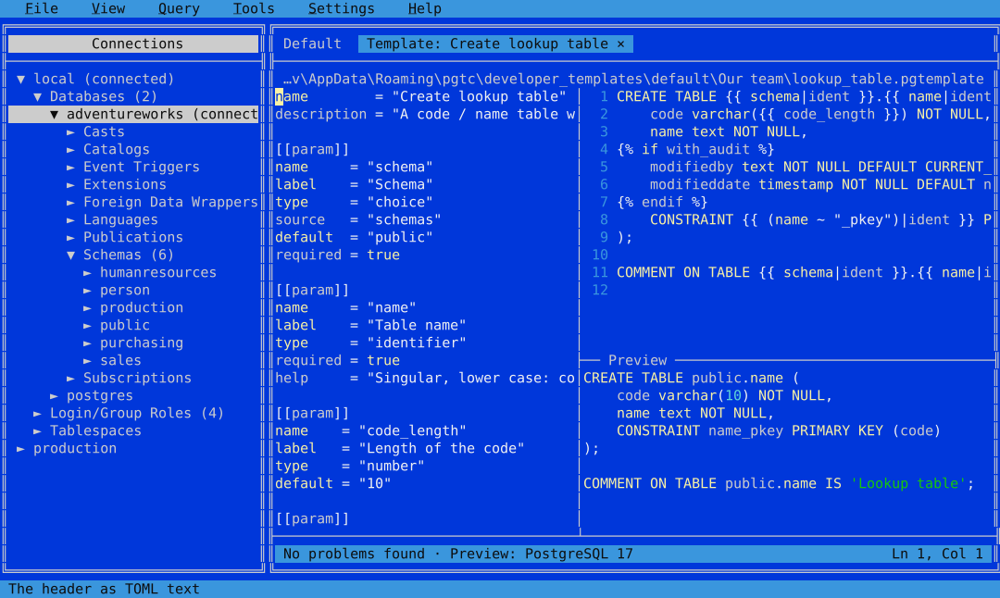
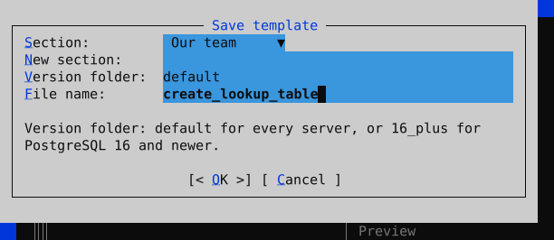
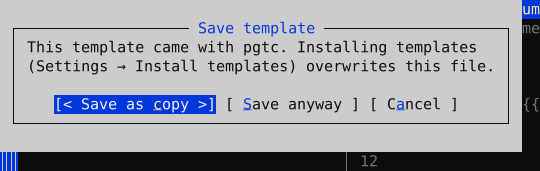

Developer template editor
An editor for developer templates: it writes the TOML header from a parameter list, helps with the Jinja body, checks both while you type and previews the SQL. The file format is in Writing your own templates.
A template tab opens no session. The preview uses the version of the server selected in the object tree; Test reads its choice lists over the tree's session.
The template manager
(command template_manager, no default key).

Unlike the F7 picker, the manager lists empty sections and
every file: a version variant has its own row, ending with its folder
([12_plus]).
| Button | Key (in the list) | Action |
|---|---|---|
| Edit | Enter, E, double click | Opens the file in a template tab; a file already open is activated. |
| New | N | A new template for the section the cursor is in. |
| Section | T | A new, empty section. |
| Copy | C | Copies the template to a new file name in the same section. |
| Rename | R | Renames the template's file or the section's directory. |
| Delete | D | Deletes the template file or the empty section. |
| Search | Alt+S, S | Matches name, description and file name. |
| Close | Esc, L |
Sections
- A section is a directory below a version folder. Section creates it under
default/;Tables/Partitionsnests. The Save template dialog can create one too. - Names: no
\ / : * ? " < > |, no control characters, no leading or trailing dot;defaultandN_plusare reserved. - Rename renames the directory in every version folder. Delete requires it to be empty in every version folder.
Copy, rename, delete
- The copy is byte-identical: change its Name, or the picker shows two entries with the same label.
- A file name that exists in the section in any version folder is refused.
- Copy and Rename act on all files of a template with variants; Delete removes only the file of the selected row.
- A deleted built-in template comes back with .
- An open tab follows a rename.
A new template, step by step
- In the manager, N on the target section.

The file bar names the section and version folder the first save will propose. - Enter on Name: name and description.
- Insert for each parameter (parameter dialog).
- Tab to the body; write the SQL. F7 inserts parameters, constructs and filters.
- Ctrl+S saves; F5 tests the form.
The template tab

- File bar: the file's path,
*when modified; for a new template its destination. - Header: name, description and the parameter list, or the raw TOML.
- Body: a SQL editor.
- Preview: the body rendered with sample values, or the error. Read-only.
- Status row: the checks and the preview's server version.
Below about 70 columns the header is placed above the body.
Moving between the parts
| Key | Action |
|---|---|
| Alt+Down / Alt+Up | Next / previous part: header → body → preview. |
| Tab / Shift+Tab | The same from the header list and the preview. In the body and the raw header Tab indents. |
| Ctrl+R | Hides / shows the preview. |
| Alt+Shift+Up / Alt+Shift+Down | Preview smaller / larger (or drag the Preview line). |
The keys of the tab
Ctrl+S save, F5 test, F7 helper menu, Ctrl+T list ↔ raw header. F5 and F7 differ from a query tab's. Full list: below.
The header list
| Key | Action |
|---|---|
| Enter, double click | Edit: name and description, or the parameter. |
| Insert | Add a parameter. |
| Delete | Delete the parameter (confirmed; the list has no undo). |
| Ctrl+Up / Ctrl+Down, Shift+Up / Shift+Down | Move the parameter: the order of the [[param]] tables and of the form's fields. |
| F2 | Context menu. |
Renaming a parameter does not rewrite the body; the status row shows Not declared: old · Not used: new.
The parameter dialog

[[param]] table; the fields are its keys.- Changing Type keeps the values already entered.
- OK applies the file parser's rules: a valid, unique name; a
choicewith exactly one origin of values; alistwith at least one field.
The types
text, identifier, number, bool, choice,
sql, list — see Parameter types. For sql,
Takes the free rows of the form is fill = true.
A choice and its values

source): one of the
built-in catalog queries.
query): one SELECT / WITH / VALUES /
TABLE statement, run read-only; the first column gives the
values.Only a source is preset from the tree's selection and yields
schema-qualified objects ({{ t|ident }}, {{ t.schema }}, {{ t.name }}); a
query yields strings.
A list and its fields

list parameter: its fields are the [[param.fields]] tables.
list and fill.Buttons: Alt+A add, Alt+E edit, Alt+D delete, Alt+U / Alt+W up / down. Field changes are applied only when the list's dialog is confirmed.
The body and its helper menu

The body is a Jinja template. F7 offers the insertions below, plus Add variant for version…, Raw header, Test… and Save as…. Each insertion is one undo step.
Insert parameter

server_version and database.| Parameter | Inserted text |
|---|---|
text, number, sql, choice with options or query | {{ comment }} |
identifier, choice with a source | {{ name|ident }} |
bool | {% if with_audit %} … {% endif %} |
list | A scaffold loop with every field and a comma between rows: |
{% for row in columns %}
{{ row.col_name|ident }} {{ row.col_type }} {{ row.not_null }} {{ row.primary_key }} {{ row.col_default }}{% if not loop.last %},{% endif %}
{% endfor %}The empty line is needed: with trim_blocks the tag at the end of the line consumes the line break.
Insert construct

if, if / else, for, the comma between rows
({% if not loop.last %},{% endif %}), {{ }}, {# #},
{% if server_version >= 170000 %}, and one {% if has("…") %} entry per feature of pgtc's
feature table, with the PostgreSQL version that introduced it. With a selection, the construct is wrapped around
it.

Insert filter

Inside a {{ … }} the filter is appended to the expression; a selected word becomes
{{ word|filter }}; elsewhere a new {{ |filter }} is inserted.
| Filter | Result |
|---|---|
ident | Identifier, quoted where needed. A source value: schema.name, each part quoted; a routine keeps its argument list, a trigger its ON schema.table. |
qtLiteral | String literal ('O''Brien'); E'…' when the value has a backslash; numbers and booleans unquoted; undefined → NULL. |
qtTypeIdent | Type name as an identifier; multi-word names (double precision) stay unquoted, [] is kept. |
indent(4, true), default(""), upper, lower, trim, replace("a", "b"), join(", "), length | As in Jinja. Every other minijinja filter works when typed. |
Make parameter from selection
Select text in the body, F7, : the parameter
dialog opens with the selection as Default; on OK the parameter is
appended and its expression replaces the selection, so the rendered SQL is unchanged. A multi-line selection becomes
a sql parameter. Not available in the raw header view.

{{ comment }} in place of the text.Autocomplete in the body
Same keys as in a query tab (Ctrl+Space, Alt+/). The
candidates come from the template, not from a catalog. The popup opens by itself inside a tag on the first letter of
a name, after ., | and has("; in the SQL after the third letter.

In the SQL, accepting a parameter inserts what Insert parameter inserts
({{ schema|ident }}, an if block, a loop). Inside a tag:
| After | Candidates |
|---|---|
{{ , {% if | Parameters (bare names), loop variables and loop, {% set %} variables, server_version, database, has(", and not, and, or, in, is, true, false, none. |
row. | The fields of the list the loop iterates. |
loop. | last, first, index, index0, length. |
table. | For a source value: schema, name; args for routines, table for triggers. |
| | The filters; indent, default, replace, join with their arguments. |
{% | if, elif, else, endif, for, endfor, set. |
has(" | The feature names, with the version that introduced each. |

c. in {% for c in columns %}.- With the raw header shown, the parameters are parsed from its text (none while it has an error).
- Nothing is offered in a
{# … #}comment or a string literal (except inhas("…")). No catalog objects.
Preview and checks
The preview renders the body after every change, with sample values:
| Parameter | Sample value |
|---|---|
with a default | The default. |
required, no default | Its own name; 1 for a number; the object schema.name for a schema-qualified source. |
| not required, no default | Empty. |
bool | Its default, else false. |
list | One row; each field its default, else its name. |

{{ length }} used, code_length declared: the undefined variable renders
empty.The checks are static: the header is validated as the file parser does, the body is compiled by minijinja, and its variables are compared with the declarations.
| Status row | Meaning |
|---|---|
| Not declared: … | Warning. Variables that are neither parameters nor context variables; they render as an empty string. |
| Not used: … | Warning. Parameters the body never references. |
| Header: … | Error. An invalid declaration; in the raw header also a TOML error or an unknown key. |
| Body, line N: … | Error. A Jinja syntax error. |
| Preview: … | Error. The body compiles but does not render with the sample values: an unknown filter, an unknown feature name in has("…"). A branch the sample values do not reach is not checked. |
A template with an error is not saved and not tested.

{% endfi %}: the status row and the preview name the line.Enter in the preview jumps to the line of a Jinja syntax error; a refused Ctrl+S or F5 does the same.
The server version of the preview
| Status row | When |
|---|---|
| Preview: PostgreSQL 17 | The row selected in the object tree belongs to a connected server: its server_version_num. |
| Preview: PostgreSQL 16 (assumed) | Otherwise. A file in 16_plus: 160000. A file in default: the newest version in pgtc's feature table, so every has("…") is true. |
The raw header

- The text is the TOML between the
+++lines, as written to the file. Preview and checks follow it. - Ctrl+T returns to the list only if the text parses.
- A file whose header does not parse opens in this view.
- pgtc writes a canonical header: one key per line in a fixed order (
name,label,type,required,default,help,options,source,query,fill, then the fields), no comments. A hand-written header is kept verbatim until something is changed in the list.
Test: the template in its form

- The form is built from the tab's text, saved or not, and rendered for the preview's server version. OK inserts nothing.
- A
sourceorqueryruns on the session the object tree holds on the selected database (aqueryread-only); defaults come from the tree's selection. - Without such a session — a server row or nothing selected, or a database not yet opened in the tree — those drop-downs show select a connected database in the object tree.
Saving
Ctrl+S. The file is replaced atomically, in the background.

- Path: templates folder
/version folder/section/file name.pgtemplate. (no section) puts the file directly into the version folder; New section… creates one (Tables/Partitionsnests). - The file name is proposed from the template's name: lower case,
_for everything that is not a letter or digit. - An existing file is overwritten only after confirmation; a file open in another tab is refused.
- binds the tab to the new file; the old one is left unchanged.
The built-in templates

A file is built-in if its path below the templates folder equals that of an embedded template
(default/Tables/table.pgtemplate). overwrites
those files, so pgtc asks:
- Save as copy: the Save dialog with
…_copy; the tab is bound to the copy. Change its Name too. - Save anyway: writes the built-in file; not asked again for this tab.
Closing a tab with changes
As for a query tab, governed by the same setting (Ask to save query tabs when closing). If the save is refused, the tab stays open.
Variants for server versions
A variant is a file with the same section and file name in a version folder
N_plus; F7 picks the folder with the highest N ≤ the server's major version, else
default. For small differences a version or feature test is enough.
- The template must have a file. Type the first major version the variant applies to: a second tab opens with a copy; the file is created on its first Ctrl+S.
- An existing variant for that version is opened instead.
- Its preview is rendered for the first version of its folder while no connected server is selected.
Keys of the template tab
| Key | Context | Action | Command |
|---|---|---|---|
| Ctrl+S | Tab | Save | save_file |
| F5 | Tab | Test | template_test |
| F7 | Tab | Helper menu | template_helpers |
| Ctrl+T | Tab | Parameter list / raw header | template_raw_header |
| Alt+Down / Alt+Up | Tab | Next / previous part | focus_lower, focus_upper |
| Ctrl+R | Tab | Hide / show the preview | toggle_results |
| Alt+Shift+Up / Alt+Shift+Down | Tab | Preview smaller / larger | results_smaller, results_larger |
| Tab / Shift+Tab | Header list, preview | Next / previous part | next_field, prev_field |
| Enter | Header list | Edit | template_edit_param |
| Insert | Header list | Add a parameter | template_add_param |
| Delete | Header list | Delete the parameter | template_delete_param |
| Ctrl+Up, Shift+Up | Header list | Move the parameter up | template_param_up |
| Ctrl+Down, Shift+Down | Header list | Move the parameter down | template_param_down |
| F2 | Header list | Context menu | context_menu |
| Enter | Preview | Go to the body's syntax error | |
| Ctrl+Space, Alt+/ | Body | Autocomplete | complete |
The template bindings are in the [template] table of
keymap.toml. Commands without a default key:
template_insert_param, template_insert_construct, template_insert_filter,
template_make_param, template_add_variant, template_manager.